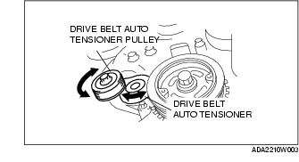

Drive belt auto tensioner inspection [ZY]
1. Remove the drive belt. (See DRIVE BELT REPLACEMENT [ZY].)
2. Verify that the drive belt auto tensioner moves smoothly in the operational direction.

3. Rotate the drive belt auto tensioner pulley by hand and verify that it rotates smoothly.
4. Install the drive belt. (See DRIVE BELT REPLACEMENT [ZY].)